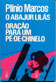
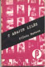
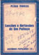
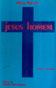
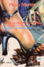
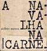
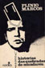
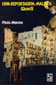
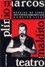
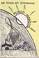

PUBLICADOS
NAVALHA NA CARNE
Teatro, 1ª edição 1968 Ilustrada Editora Senzala Esgotado
QUANDO AS MÁQUINAS PARAM
Teatro, 1ª edição 1971 Editora Obelisco Esgotado
HISTÓRIAS DAS QUEBRADAS DO MUNDARÉU (1973)
Editora Nórdica Coletânea de contos anteriormente publicados no jornal Última Hora, SP Esgotado
O ABAJUR LILÁS
Teatro, 1ª edição 1975 Editora Brasiliense Esgotado
imagem
não
disponível
BARRELA
Teatro, 1ª edição 1976 Editora Símbolo Esgotado
UMA REPORTAGEM MALDITA, QUERÔ
Romance, 1ª edição 1976 Editora Símbolo/ edições posteriores, até 8ª, Edição do Autor/ 8ª edição, 1992, Editora Maltese/ 9ª edição, 1999, Publisher Brasil
INÚTIL CANTO E INÚTIL PRANTO PELOS ANJOS CAÍDOS contos, 1ª edição 1977, Editora Lampião/edição posterior Edição do Autor, pocket book
DOIS PERDIDOS NUMA NOITE SUJA, teatro, 1ª edição 1978 Editora Global/ 2ª e 3ª edições 1984, Editora Parma
ORAÇÃO PARA UM PÉ-DE-CHINELO
Teatro, Edição do Autor, s/d, esgotado
JESUS-HOMEM
Teatro, 1ª edição 1981, Editora do Grêmio Politécnico/ 2ª edição do Autor, 1982, pocket book
PRISIONEIRO DE UMA CANÇÃO
Contos autobiográficos, Edição do Autor, 1982
NAVALHA NA CARNE e QUANDO AS MÁQUINAS PARAM Teatro, 2ª e 3ª edições, 1984, Editora Parma
imagem não disponível
NOVAS HISTÓRIAS DA BARRA DO CATIMBÓ
Contos, Edição do Autor, s/d
MADAME BLAVATSKY
Teatro, Edição do Autor, 1985, pocket book
A FIGURINHA E SOLDADOS DA MINHA RUA
Histórias Populares (1), relatos autobiográficos, Edição do Autor, 1986, pocket book
CANÇÕES E REFLEXÕES DE UM PALHAÇO
Textos curtos: O Ator, As Visões (poema), Sempre em Frente, O Ideal (poema), Edição do Autor, 1987, pocket book
A MANCHA ROXA, teatro, Edição do Autor, 1988, pocket book
TEATRO MALDITO
Teatro, 1992, Editora Maltese, contém as peças Barrela, Dois Perdidos Numa Noite Suja e O Abajur Lilás.
A DANÇA FINAL
Teatro, 1ª edição 1994, Editora Maltese
NA TRILHA DOS SALTIMBANCOS
- 1º caso: O Assassinato do Anão do Caralho Grande, conto, Edição do Autor, 199?
O ASSASSINATO DO ANÃO DO CARALHO GRANDE
Noveleta policial e peça
teatral, 1ª edição 1996, Geração Editorial
FIGURINHA DIFÍCIL, Pornografando e Subvertendo, relatos autobiográficos, 1ª edição 1996, Editora Senac
O TRUQUE DOS ESPELHOS, contos autobiográficos, 1ª edição 1999, Una Editoria
COLEÇÃO MELHOR TEATRO, peças: BARRELA, DOIS PERDIDOS NUMA NOITE SUJA, NAVALHA NA CARNE, ABAJUR LILÁS, QUERÔ; Editora Global, setembro 2003; prefácio Ilka Marinho Zanotto
imagem não disponível
HISTÓRIAS DAS QUEBRADAS
DO MUNDARÉU, (2004)
Editora de Cultura
Coletânea de contos anteriormente publicados no jornal Última Hora, SP
OUTRAS EDIÇÕES
HOMENS DE PAPEL e BARRELA
Teatro, Edição do Autor, 1984
O ABAJUR LILÁS e ORAÇÃO PARA UM PÉ-DE-CHINELO, Teatro, Edição do Autor, s/d
NA BARRA DO CATIMBÓ
Romance, Edição do Autor, 1984
BALADA DE UM PALHAÇO
Teatro, Edição do Autor, 1986, pocket book Observações: O texto O ATOR, do livro CANÇÕES E REFLEXÕES DE UM PALHAÇO, também foi publicado em forma de cartaz, inicialmente, por Nossa Caixa, SP, 1988, e é a ampliação de um monólogo do personagem Bobo Plin, da peça BALADA DE UM PALHAÇO.
O texto A VOCAÇÃO, que também foi publicado em forma de cartaz, é um monólogo do personagem Bobo Plin, da peça BALADA DE UM PALHAÇO.
Algumas traduções
- Deux Paumés dans une Nuit Pourrie (Dois Perdidos numa Noite Suja): tradução e adaptação de Jacques Thieriot, 1974
- Le Rasoir sur la Gorge (Navalha na Carne): tradução e adaptação de Jacques Thieriot, 1974
- Zwei Verlorene in Einer Schmutzigen Nacht (Dois Perdidos numa Noite Suja): tradução de Henry Thorau, publicada por Henschelverlag Kunst und Gesellchaft, Berlim, DDR, 1985
- Two Lost in the Filthy Night: tradução de Elzbieta Szoka, 1988, parte do livro Three Contemporary Brazilian Plays, Host Publications (Austin, Texas), edição bilíngue
- Dos Perdidos en una Noche Sucia: tradução de Ileana Diéguez Caballero, incluída no livro Teatro Brasileño Contemporáneo, publicado por Editorial Arte y Literatura, Ciudad de la Habana, Cuba, 1990
- Deux Perdus dans une Nuit Sale: tradução de Ângela Leite-Lopes, 1998, edição do Ministério da Cultura, Funarte
- Two Lost Souls on a Dirty Night: tradução de Henrik Carbonnier para a montagem dirigida por André Pink, Londres, 2000
Algumas pesquisas
- Revista Psicologia Moderna, Ano I, nº 6: depoimento do Padre Ednio Vale, professor de Psicologia da Religião da PUC de São Paulo, a respeito da religiosidade em Dois Perdidos Numa Noite Suja
- Debates do Teatro Casa Grande: Ciclo de Debates da Cultura Contemporânea, publicado pela Editora Inúbia, Coleção Opinião, 1976; participou como debatedor na área de Teatro
- Plinio Marcos: Reporter of Bad Time: artigo de Peter Schoenbach, publicado em Dramatists in Revolt: The New Latin American Theater, Austin, University of Texas Press, 1976
- Plínio Marcos: O Discurso da Violência: artigo de Izidoro Blikstein, do Departamento de Linguística da FFLCH/USP, publicado na Revista Contexto, nº 5, março de 1978; ensaio de semiologia do romance Querô
- Antônio Mercado: tese de doutorado sobre a obra teatral de Plínio Marcos, Universidade de Yale, Estados Unidos, 1980
- Viver & Escrever: depoimentos de vários autores, compilados por Edla Van Steen, volume 1, 1981, L&PM Editores
- O Teatro Brasileiro Moderno: Décio de Almeida Prado, Editora Perspectiva, São Paulo, 1988
- Plínio Marcos, a Flor e o Mal: ensaio de Paulo Vieira, 1994, Editora Firmo
- Balada de um Palhaço: Anotações à Margem: artigo de Antônio Cadengue, publicado em Arte e Comunicação, Revista do Centro de Artes e Comunicação da Universidade Federal de Pernambuco, Recife, 1994
- A Semiotic Study of Three Plays by Plinio Marcos (Balbina de Iansã, Barrela e Balada de um Palhaço): tese de doutorado de Elzbieta Szoka, 1991, University of Austin, Texas, publicada por Peter Lang Publishing, Inc., 1995
- A Desova da Serpente: livro de Mário Guidarini, doutor em Filosofia da Arte e Estética, USP; estudo do bem e do mal na obra de Plínio Marcos e Nélson Rodrigues; Editora da Universidade Federal de Santa Catarina, 1997
- Moderna Dramaturgia Brasileira: Sábato Magaldi, Editora Perspectiva, São Paulo, 1998
- Os Marginais do Palco: artigo de Sábato Magaldi, Revista D.O. Cultura, publicação mensal da Imprensa Oficial do Estado de São Paulo, novembro de 2000; inserido em seu livro Depois do Espetáculo, Editora Perspectiva, 2003, p. 95
- Quando o Teatro Encena a Cadeia: Atualidade e Recepção da dramaturgia de Plínio Marcos (A Barrela e A Mancha Roxa), tese de mestrado em Teoria da Literatura, de Wagner Coriolano de Abreu, 2001, Editora Unisinos
- A Crônica dos que Não Têm Voz: livro sobre a obra de cronista de Plínio Marcos, com algumas Crônicas Coligidas, trabalho organizado por Javier Contreras, Fred Maia e Vinícius Pinheiro, 2002, Boitempo Editorial
- Depoimento: artigo de Fernando Bonassi, publicado na Revista Rodapé (Crítica de Literatura Brasileira Contemporânea), nº 1, Editora Nankin, 2001
- Plínio Marcos, um Homem Ungido pela Divina Ira: artigo de Paulo Vieira, publicado na Revista Folhetim, nº 8, 2000
Pesquisas não publicadas
- Plínio Marcos, a Navalha do Teatro: trabalho de conclusão de curso para obtenção do título de bacharel em Comunicação Social, Universidade Bandeirante de São Paulo; autores: Alexandre Santos, Daliléia Silva, Arlindo de Araújo Ferro Jr., Alberto Moraes Barros, Sara Reis Barros; novembro de 2001
- O Discurso da Exclusão em Plínio Marcos: uma Leitura de A Mancha Roxa: tese de pós-graduação em Letras, nível de mestrado, Faculdade de Ciências e Letras de Araraquara, SP, Wagner Corsino Enedino, 2002
- Tensão e Imagem: um Olhar Decadente em A Navalha na Carne: artigo de Kátia Carvalho da Silva, professora de Literatura Brasileira na Universidade Estadual do Maranhão; análise comparativa entre a linguagem literária da peça e a linguagem cinematográfica de suas adaptações fílmicas
- Acting with Violence: The Role of Violence in Two Latin American Plays: análise de Soraya Freed para Dois Perdidos numa Noite Suja e Decir Sí (texto argentino de Griselda Gambaro), curso de Drama of Brazil and Argentina, professora Elzbieta Szoka, Columbia University, 2000
- Victim versus Victimizer: The Struggle for Power: análise de Joya Powell para Dois Perdidos numa Noite Suja e Decir Sí (texto argentino de Griselda Gambaro), curso de Drama of Brazil and Argentina, professora Elzbieta Szoka, Columbia University, 2000